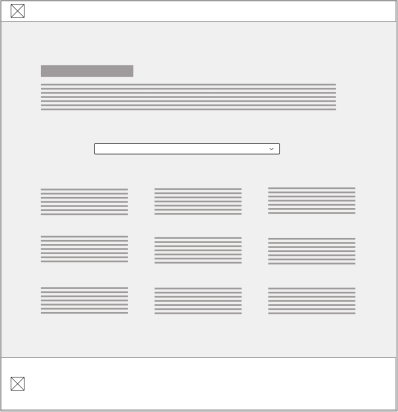

Red Lands Roses
A Website redesign for a Rose farm in Ruiru, Kenya.
My Role
I was the visual designer and worked with my supervisor who acted as a liaison between myself and the client.
Problem statement
Modernising a classic and successful flower farm company to update their online presence and make them more discoverable to new international clients
Objectives & Goals
Competitive Analysis
I conducted a research analysis to understand who our competitors were and what their online presence looked like, not only in order to determine the common features that were standard across the industry, but also to set Red land roses apart.
| Company | Has an About Page | Has a Contact Page | Is Responsive | Has a call to action | Has an updated design | Includes Product Catalogue | Searchable |
|---|---|---|---|---|---|---|---|
|
|
|||||||
Key Highlights
Wireframes
Landing Page
The landing page highlights the 4 main important features on this website from a business values proposition.

Product Catalogue Page
The layout for this page is in an e-commerce style, particularly because it is familiar to most viewers and looking at the competitors, this was a format that looked most appealing, and worked well with the technical requirements.

Client & Partners Page
The primary point of this page is to demonstrate how many clients and partners redland roses has via filterable element. This visually demonstrates to the user that there are many to view, rather than the previous scrollable table which did not make the information easily digestible.
The About page
The about page has a lot of important information that the client wants to include. Some of that includes its processes but also the social impact that they have made in their local community. For a company that has been established for this long, there is a lot of information that is deemed important, so the challenge here is to make this information digestible.

The About page
- Updated
Given the amount of information in this page, a split view made sense, where you could access a page exclusive to the processes, which will follow the layout below and make use of the space for all the detailed information in that section.

The community impact section of the “About us” will use the layout above partly due to the technical considerations such as allowing a Content Management System (CMS) functionality such as Wordpress, mostly because the projects involved in these sections are on going and are constantly being updated.

Sitemap

Final Design
Important elements of the Calls to Action
- The first call to action draws the viewer to the many ranges of roses available and so the via Information Architecture, this is the first call to action and includes a button that send you directly there.
- The second piece of information that is important is the fact the redland roses is an international flower company. As a point of pride and a significant business advantage, it is important to direct viewers to view these details.
- The “About Us” section is important to get a deeper understanding of who this company is, and a little bit about their history.
- The Corporate social responsibility is the 4th value the company wants to direct their viewers to; the value that the business adds to the community also includes a call to action taking you to another page to view more. The “About us” and “Corporate Social Responsibility” both live in the same place and direct to the same page.


Important elements in the CSR page
Important elements of the Calls to Action

Important elements in the Catalogue
- The technical capabilities of this section were influential in how this page was designed. Due to the restrictions of how the database was configured.
- The roses can be sorted via colour/rose type/vaselife, and so the filters need to be easily available and intuitive to the user.
- The catalogue is visually pleasing and on hover to a specific flower, you are prompted to view more.
- The detailed view of the selected flower takes you to another page. A modal was initially suggested but due to pushback from developers we made this a new page.
Important elements in the Clients & Partners page
- The title is gripping and draws you in to the point of the page.
- There is a break down of all the regions that we cover that are filterable by clicking on the continent which filters the information below.
- The continents as buttons also demonstrates the reach of the clients globally. The decision to go about things this way was not only due to conversations with developers but also came as a result of organising the data via IA.

Results
The website was initially developed during my time at Jenga, however has gone through various iterations since my departure. You can view the current state of the website here. Thanks for viewing!